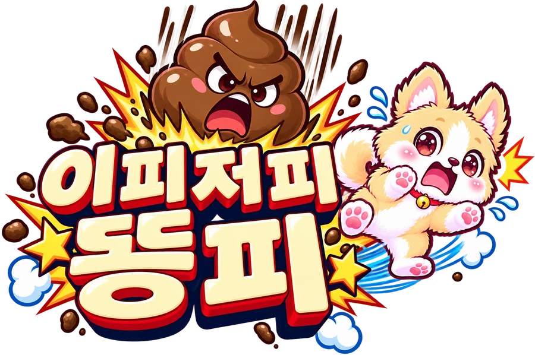

⏸
▲
◀
▶
▼
테스트 종료
레벨 ▲
Lv 1
레벨 ▼

🏆 이번 주 TOP 10
불러오는 중…
👑 지난주 명예의 전당
플레이어
-
수정
저장
👆 터치
🎮 패드
🎵
🔔
시작하기
개발자 페이지
메인으로
확인
닫기
일시정지
▶ 계속하기
🎵
🔔
↻ 다시하기
직업 선택
시작
← 다른 직업 보기
← 메인으로 돌아가기
테스트 모드
목숨 무한 · 기록은 남지 않습니다
확인
닫기
⭐ 증강 선택 🌙
🔄 다시 뽑기
게임 오버!
0
🎉 TOP 10 진입! 이름을 남기세요
등록
🏆 이번 주 TOP 10
불러오는 중…
다시 하기